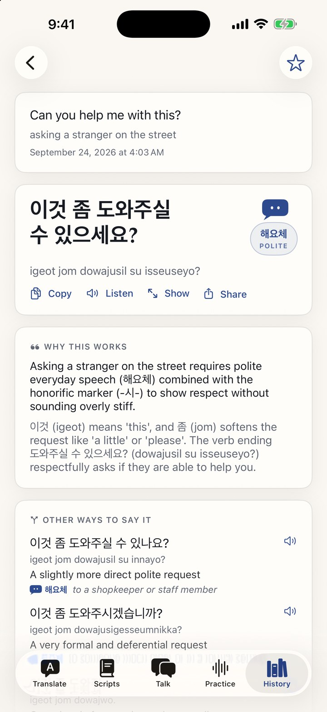
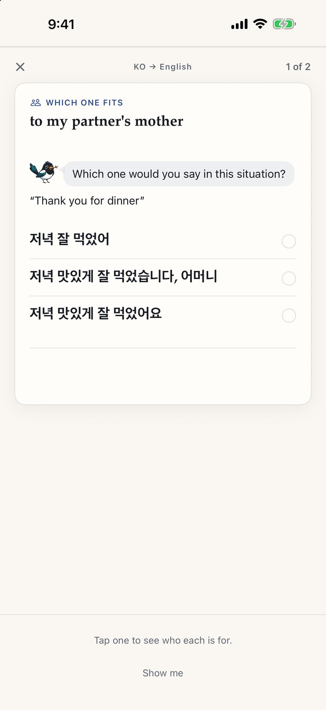
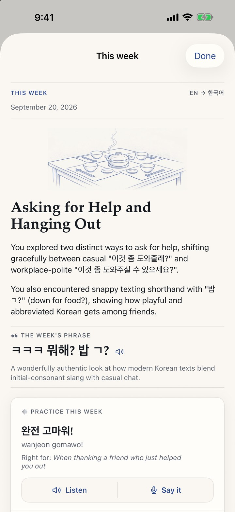
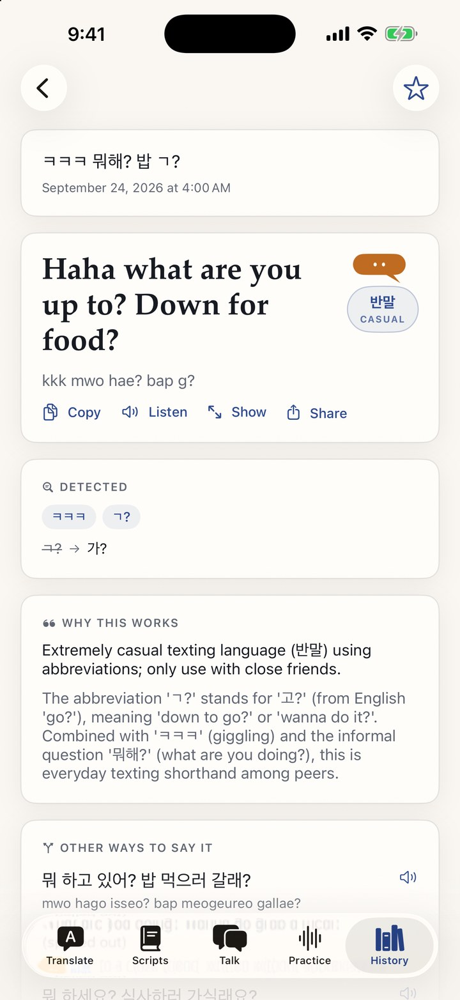
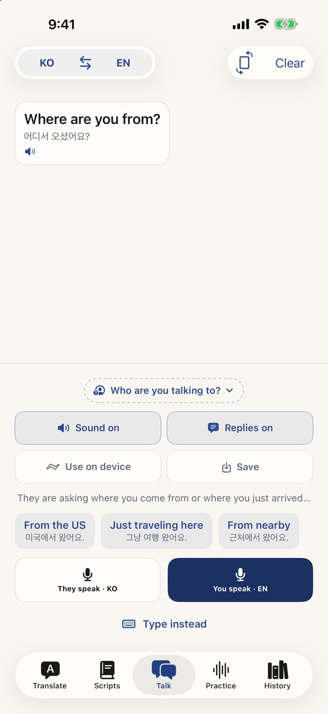
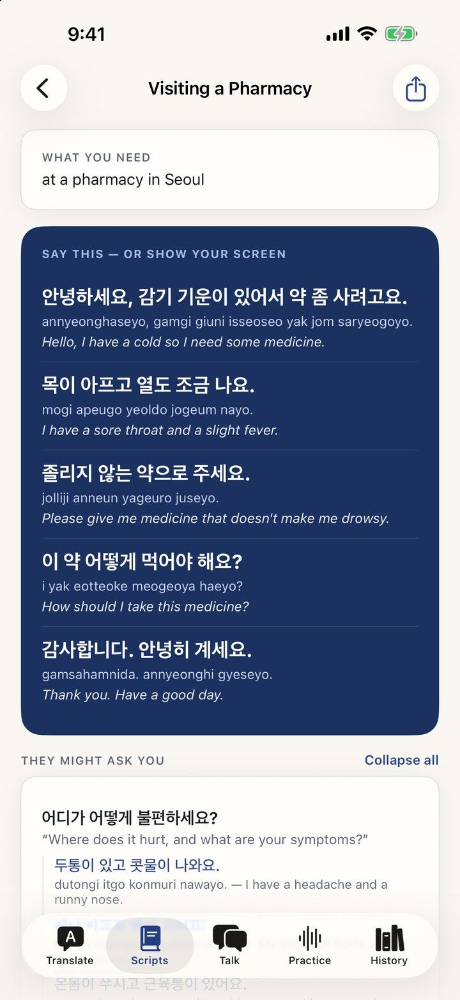
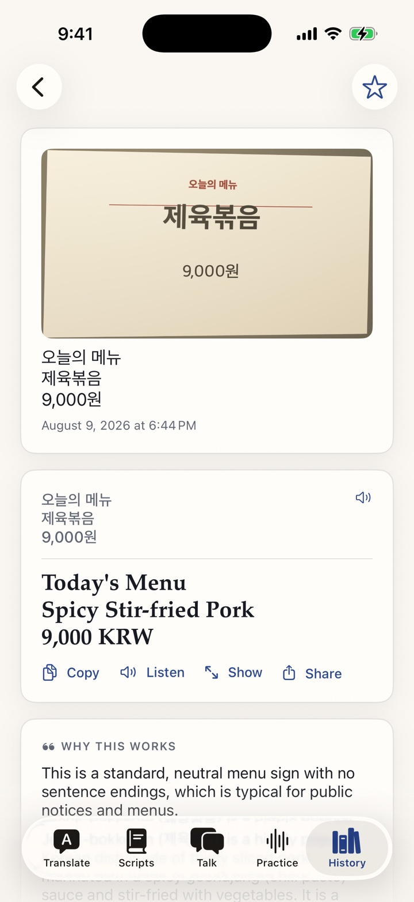
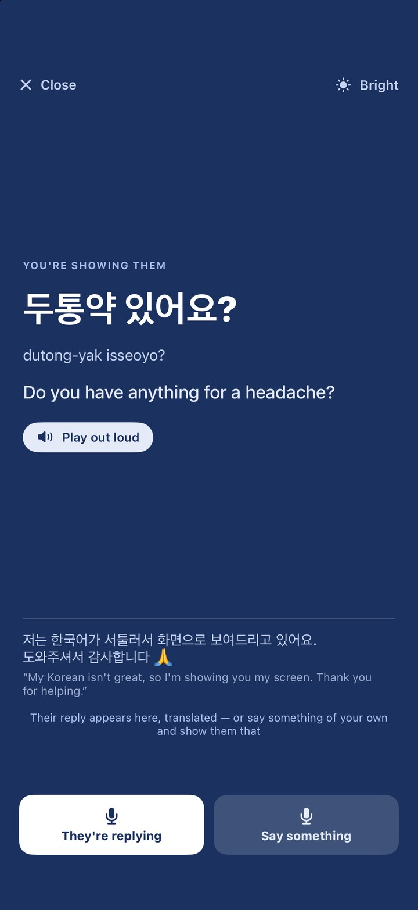

Look it up, understand why it fits the person you’re talking to, and practice it until it sticks. Tono Translate picks the level of formality for your boss, a friend, someone you love — and explains it in your own language.
Free to try on the App Store · Korean, Japanese, Chinese & 10 more

Type the phrase — or paste a message, snap a photo, or just say it — and add who and where: “to my boss,” “at a market.” One line of context changes the whole answer.
The right level of formality for that person, named and explained in your own language — plus other ways to say it to other people.
What you look up comes back as short drills, a weekly lesson and a phrase a day on your Home Screen — until you don’t need to look it up.
Everything you look up comes back to you — as drills, a weekly lesson and a phrase a day — so the right words are already there next time.
Not a word list: the sentences you actually needed. Say one from memory, work out what a message says, or pick which version fits which person. A few minutes at a time, and it works offline.

Once a week, Tono Translate reads what you looked up and writes a short lesson on the level of formality you’re building. It asks you for phrases from memory, brings back earlier ones, and gives gentle feedback on a sentence of your own. Kept on your phone, never on our servers.

Add the Tono Translate widget and each day it brings back one phrase you looked up, with the meaning hidden. Try to remember it, then tap Show the meaning. Tap the card to open the phrase in the app. With Tono Translate Pro.
The first impression you only get one of — and the one where sounding too casual reads as disrespect, not warmth.
Colleagues won't tell you your Korean sounds blunt. They'll just stop asking what you think.
Get a word wrong and someone corrects you. Get the level of formality wrong and nobody says anything — and in Korean, Japanese or Spanish, the level is the message.

Paste the message you can't read. Tono Translate decodes slang, shorthand and typos — and explains the level of formality they chose, so you know where you stand.
Friendly, formal, or flirting? The words translate easily. The signal underneath doesn't — until now.



Full screen, full brightness, and a courtesy note in their language so a stranger understands what they're looking at — and wants to help. When they answer, it listens and shows you what they said, with replies ready to tap.

Every explanation arrives in your own language — and so does the app itself. Korean is where Tono Translate goes deepest, but the whole thing works between any two.
Free to try on the App Store. Translate, see why, and practice until it sticks.